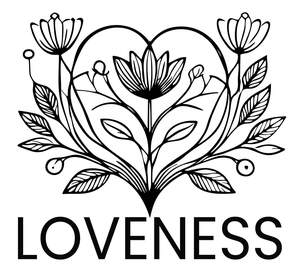

Trade Mark Journal No.2025/029 18 July 2025
UK00004231557 9 July 2025 (3)

- Class 3
- Scented body lotions and creams; Aromatherapy lotions; Massage oils and lotions; After-sun oils [cosmetics]; Scented body lotions; Scented oils; Perfumed oils for skin care; Scented body creams; Suntan oils [cosmetics]; Perfume oils; Natural oils for perfumes; Aromatherapy creams; Oils for perfumes and scents; Tanning oils [cosmetics]; Oils for the skin; Skin lotions; Lotions for the skin; Moisturizing body lotions; Skin moisturizers used as cosmetics; Moisturising skin lotions [cosmetic]; Bath oils; Aromatic oils for the bath; Body creams [cosmetics]; Non-medicated bath oils; Bath oils (Non-medicated -); Moisturising creams, lotions and gels; Cleansing lotions; Skin balms [cosmetic]; Cosmetics in the form of oils; Perfume oils for the manufacture of cosmetic preparations; Body oils [for cosmetic use]; Perfumed body lotions [toilet preparations]; Cosmetic creams and lotions; Body and facial creams [cosmetics]; Mineral oils [cosmetic]; Cosmetic oils for the epidermis; Beauty lotions; Non-medicated skin lotions; Moisturisers [cosmetics]; Skin care oils [cosmetic]; Cosmetics in the form of lotions; Skin fresheners [cosmetics]; Cosmetic sun oils; Cosmetic hair lotions; Facial lotions; Skin care oils [non-medicated]; Hair lotions; Moisturising body lotion [cosmetic]; Facial creams [cosmetics]; Scented soaps; Aftershave lotions; Shaving oils; Facial oils; Skin balms (Non-medicated -); Non-medicated skin balms; Anti-aging moisturizers used as cosmetics; Sun blocking oils [cosmetics]; After-shave lotions; Perfumed lotions [toilet preparations]; Moisturising skin creams [cosmetic]; Skin care lotions [cosmetic]; Suncare lotions [for cosmetic use]; Tissues impregnated with cosmetic lotions; Lotions (Tissues impregnated with cosmetic -); Ethereal oils for fragrancing; Shaving lotions; Bath lotions (Non-medicated -); Skin recovery creams [cosmetics]; Hair balms; Scented bathing salts; Suntan lotion [cosmetics]; Non-medicated hair lotions; Hair oils; After-sun lotions [for cosmetic use]; Milky lotions for skin care; Beauty balm creams; Cosmetic sun milk lotions; Bath oils for cosmetic purposes; Cosmetic facial lotions; Facial lotions [cosmetic]; Perfumed creams; Fluid creams [cosmetics]; Skin masks [cosmetics]; Non-medicated shower oils; Bathing lotions; Sun-tanning creams and lotions; Skin cleansing lotion; Body lotions; Bath and shower oils [non-medicated]; Non-medicated skin clarifying lotions; Suncare lotions; Skin moisturizers; Massage oils; Non-medicated stimulating lotions for the skin; Tissues impregnated with essential oils, for cosmetic use; Hair care lotions [for cosmetic use]; Body and facial gels [cosmetics]; Aftershave balms; Facial massage oils; After-sun lotions; Sunscreen lotions; Non-medicated oils; Cosmetic nourishing creams; Perfumed powders [for cosmetic use]; Depilatory lotions; Body massage oils; Body and facial oils; Cosmetic suntan lotions; Skin lotion; Lavender oil for cosmetic use; Shower oils; Colouring lotions for the hair; Moisturizing creams; Skin cleansers [cosmetic]; Massage oils, not medicated; Body gels [cosmetics]; Cosmetic massage creams; Skin moisturizer masks; Facial gels [cosmetics]; Hair care lotions; After-shave balms; Moisturizers; Body deodorants [perfumery]; Perfumed soaps; Cosmetic bath salts; Cuticle oils.
Grzegorz Semaniszyn
Dorota Semaniszyn